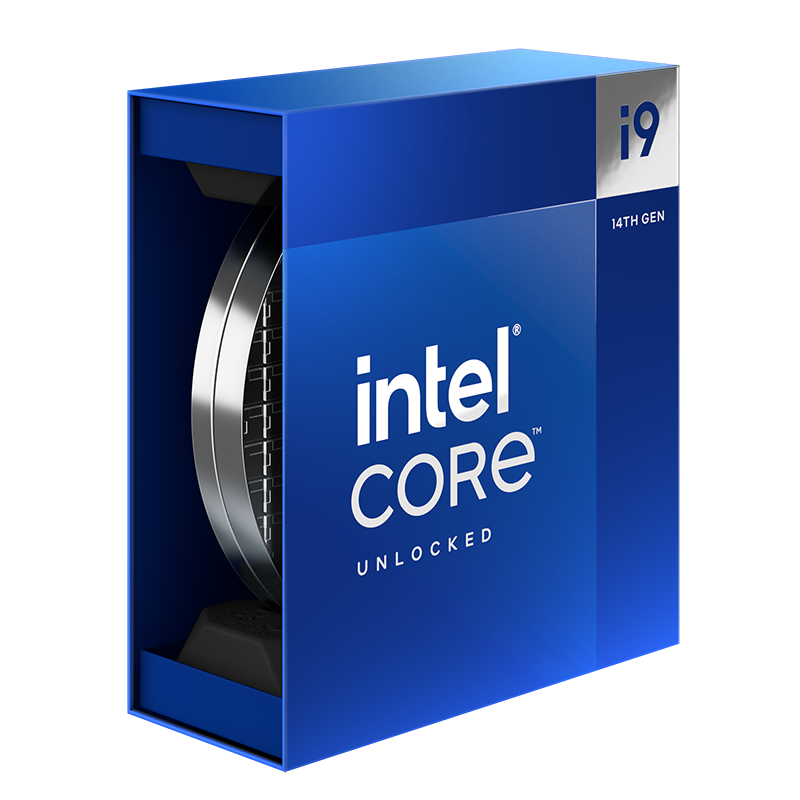

WHAT IS A CPU?
Central Processing Units (CPUs), often referred to as the brain of a computer, are critical components responsible for executing instructions and performing calculations that drive nearly all functions within a computer system. Their primary function is to process data by performing complex computations and managing input and output operations, which ensures smooth operation of applications, operating systems, and various other tasks. The purpose of CPUs extends to enhancing overall system performance, supporting multitasking, and providing the necessary computational power for tasks ranging from basic word processing to intensive scientific simulations. Prices of CPUs vary widely based on their capabilities, brand, and intended use. Entry-level models, suitable for everyday tasks and basic computing needs, might start around $50 to $100. In contrast, high-end CPUs like the Intel Core i9-14900, designed for demanding applications such as gaming, video editing, and professional workloads, can exceed $600. These premium processors offer superior performance with advanced features like higher core counts, faster clock speeds, and larger caches, catering to enthusiasts and professionals who require top-tier computational power and are willing to invest significantly for optimal performance.
